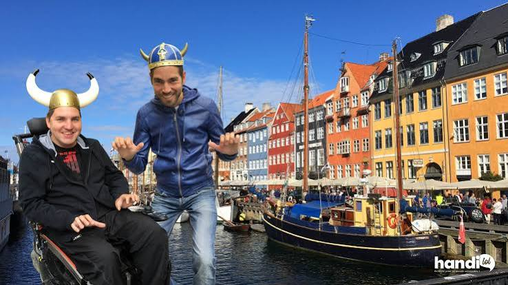

CityLoop Quest Copenhague


Copenhague accueille bien les familles parce que les distances sont raisonnables et que de nombreux espaces publics prévoient jeux, tables et toilettes. Tivoli, le Musée national, Experimentarium, Den Blå Planet et le zoo proposent des expériences très différentes. Pour de jeunes enfants, alternez une visite intérieure avec un parc ou un trajet en bateau plutôt que d’enchaîner les salles silencieuses.
Les poussettes circulent facilement sur les trottoirs larges et dans le métro, mais les pavés de Nyhavn, du Kastellet ou des cours historiques peuvent secouer. Les ascenseurs des stations sont nombreux ; une panne ponctuelle peut toutefois imposer un détour. Les bus disposent d’espaces multifonctions partagés avec fauteuils roulants, poussettes et vélos selon les règles de priorité.
La plupart des grands musées sont accessibles, parfois par une entrée différente de la porte monumentale. Les bâtiments anciens comme la Tour Ronde, Rosenborg ou certaines maisons de musée conservent des limitations structurelles. La rampe de la Tour Ronde évite les escaliers sur une grande partie du parcours, mais l’accès final au sommet comporte des passages étroits.
Les personnes sensibles au bruit ou à la foule peuvent privilégier les premières heures, les nocturnes calmes et les espaces extérieurs. Plusieurs institutions prêtent tabourets, fauteuils ou équipements, et publient des informations détaillées sur leur site. Une carte d’accompagnement ou des tarifs spécifiques existent parfois, mais les conditions diffèrent selon l’établissement.
En cas de besoin médical non vital dans la région capitale, le numéro 1813 oriente vers la garde ; le 112 reste réservé aux urgences vitales. Gardez les coordonnées de l’hébergement et une pièce d’identité. Avec des enfants, prévoyez vêtements de pluie, gourde et petite collation : le vent et les changements rapides de météo fatiguent plus que la distance indiquée sur la carte.